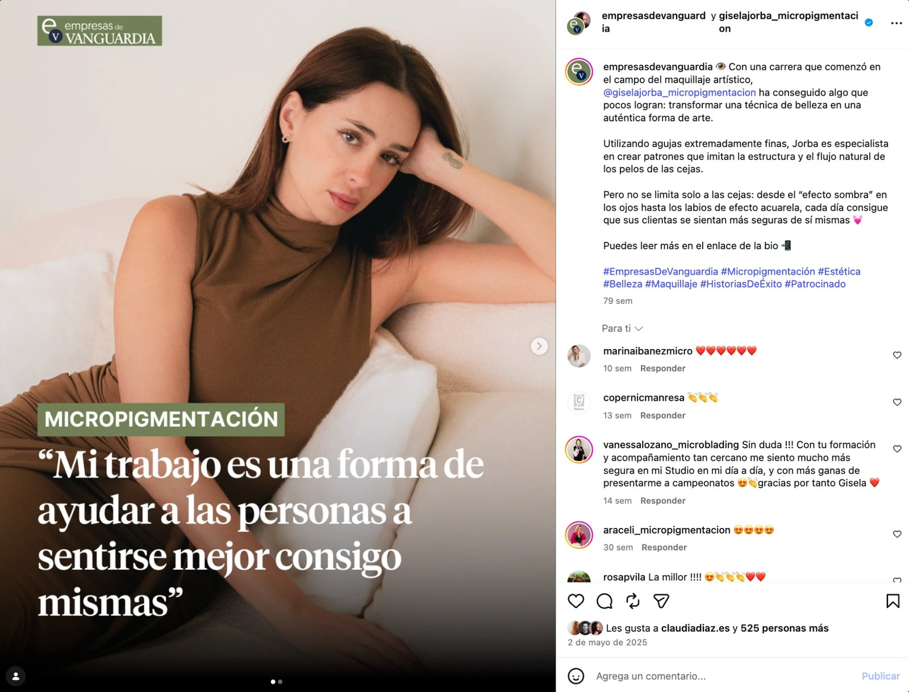
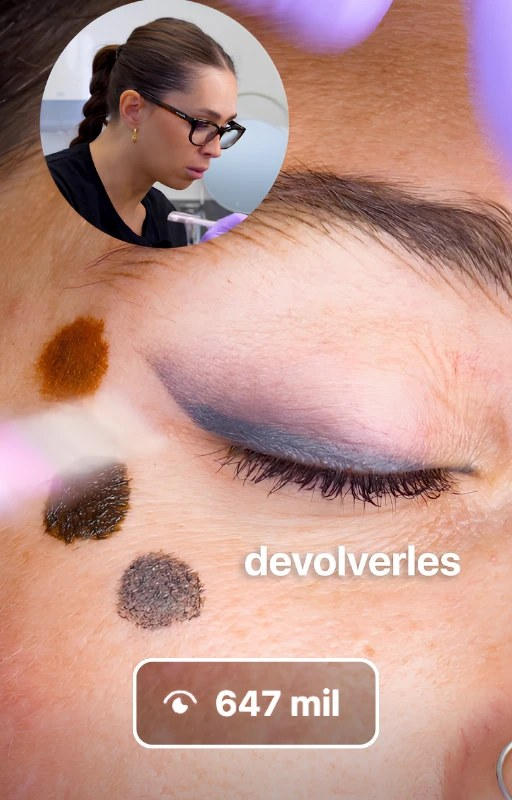
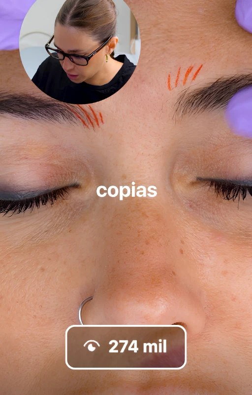
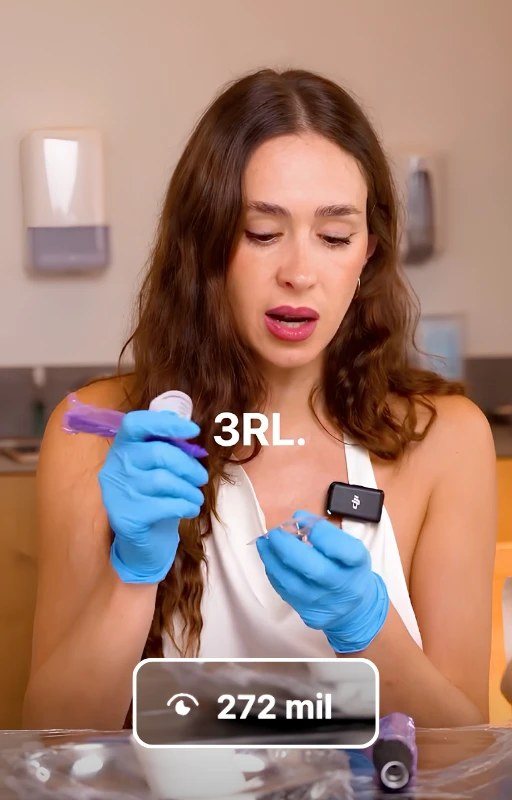
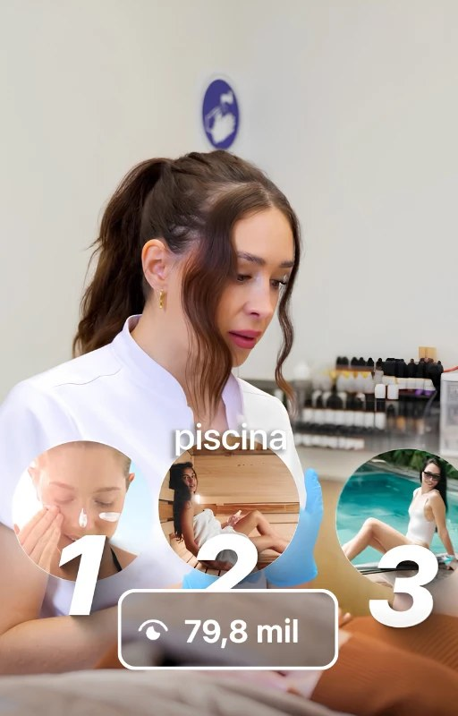
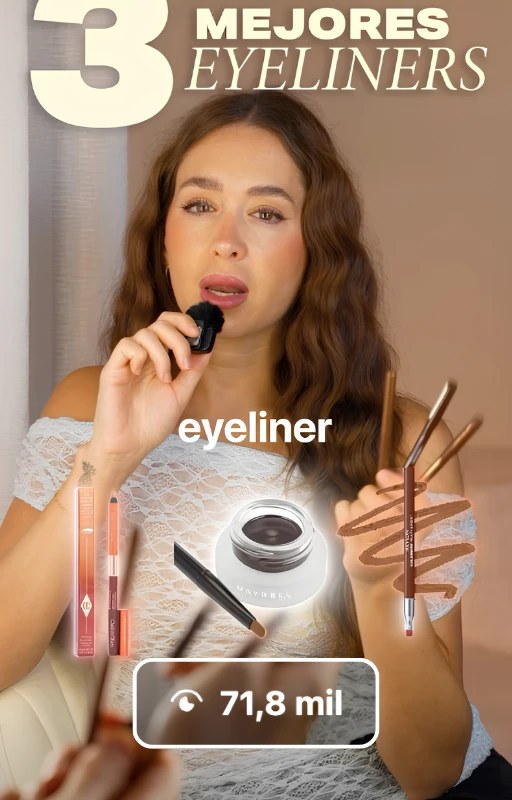
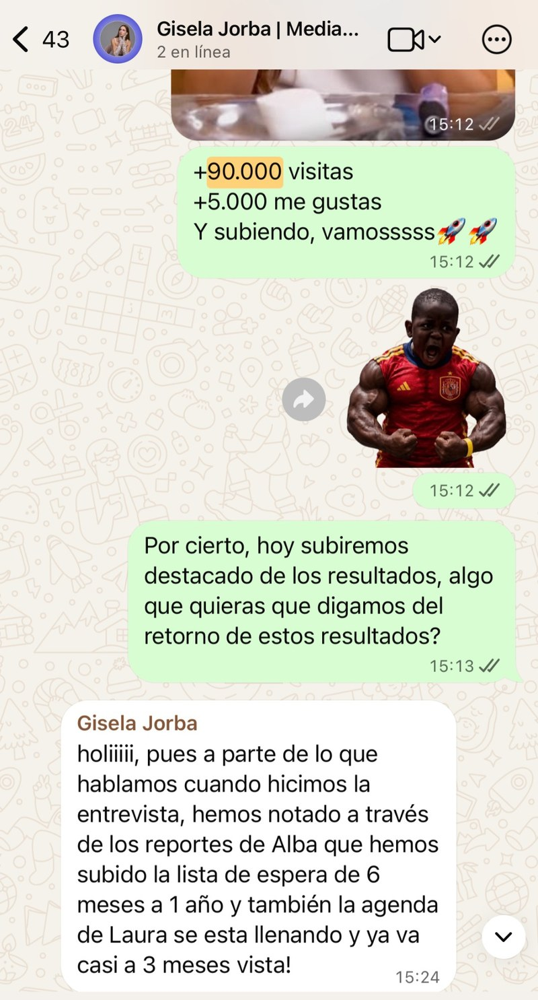

Artículo publicado el 15 de septiembre de 2026 y actualizado el 1 de noviembre de 2026 con los vídeos más vistos del perfil de Gisela.
Muchos creen que para crecer en Instagram y conseguir ventas hacen falta vídeos de millones de visualizaciones. El caso de Gisela Jorba demuestra lo contrario. Desde que empezamos a publicar su contenido de forma constante, en enero de 2026, su cuenta ha pasado de 6.000 a 24.400 seguidores, con un crecimiento centrado exclusivamente en su sector: la micropigmentación.
En este caso de éxito explicamos quién es Gisela, cómo planteamos una estrategia para dos públicos distintos desde una misma cuenta y qué resultados ha conseguido, incluido el lanzamiento de su formación online, que cerró más de 50 ventas.

Quién es Gisela Jorba
Gisela Jorba es una de las micropigmentadoras de referencia en España. Está especializada en micropigmentación de cejas, ojos y labios, y dirige MetLab, su centro en Sant Fruitós de Bages. Lleva más de 10 años en el sector y por sus manos han pasado más de 8.000 clientas.
Además de atender en su centro, Gisela forma a otras profesionales de la micropigmentación, tanto de forma presencial como online.
Nuestra relación con ella empezó en marzo de 2025 con proyectos de vídeo puntuales. A principios de 2026 dimos el paso a una estrategia de contenido constante en Instagram, y desde entonces trabajamos juntos de forma continua. Con el tiempo, Gisela se ha convertido en mucho más que una clienta: es parte del equipo con el que compartimos cada victoria.
Además, Gisela participa como ponente en congresos del sector, y hemos coincidido con ella en dos de ellos: el PMU Paradise, en Tenerife, y el Gamma PMU Congress, en San Sebastián, donde ambos subimos al escenario.
El punto de partida: buen contenido, pero sin estrategia
Cuando empezamos a trabajar su contenido de forma constante, la cuenta de Gisela llevaba tiempo estancada en torno a los 6.000 seguidores. Y no por falta de esfuerzo: ella misma se encargaba de sus redes, con la ayuda puntual de algún filmmaker, y le dedicaba entre dos y tres horas al día.
El contenido estaba muy cuidado visualmente: fotos de resultados y vídeos estéticos que mostraban la calidad de su trabajo. Pero ese tipo de contenido sirve para fidelizar a quien ya te sigue, no para atraer a personas nuevas. Por eso la cuenta apenas crecía.
«Hacía un tipo de vídeo más estético, más cinematográfico, y con vosotros aprendí que eso no convierte en seguidores ni hace crecer una cuenta de forma orgánica en Instagram.»
Gisela Jorba
Pagar por aparecer y no conseguir clientas
Antes de apostar por las redes, Gisela también había probado otros canales, como la radio o la prensa. Uno de ellos fue una aparición en La Vanguardia. Lejos de ser gratuita, era una publicación pagada. ¿El resultado? Ninguna clienta.
Este es uno de los grandes problemas de la publicidad en medios tradicionales: no solo puede no generar tráfico ni clientes, sino que exige pagar por estar ahí, y el impacto desaparece en pocos días. El contenido en redes sociales, en cambio, sigue trabajando mucho después de publicarse. Lo explicamos con más detalle en nuestro artículo sobre las opciones de marketing para este 2026.

La estrategia: dos públicos, una sola cuenta
Un reto poco habitual
Al empezar a trabajar juntos detectamos algo clave: Gisela tenía lista de espera de seis meses en su centro. Atraer más clientas no era la única prioridad. También queríamos impulsar su faceta de formadora y atraer a micropigmentadoras interesadas en sus cursos.
Eso significaba trabajar para dos públicos distintos:
- Clientas que quieren hacerse un tratamiento en MetLab.
- Micropigmentadoras que quieren formarse con Gisela, de forma presencial u online.
Lo habitual en estos casos es abrir dos cuentas, una para cada público. Nosotros optamos por gestionarlo todo desde la misma cuenta. En función de las necesidades de cada momento, las temáticas de los vídeos se orientan a un público o al otro. El resultado ha demostrado que fue la decisión acertada.
Viralidad, pero dentro del nicho
La micropigmentación es un sector en crecimiento, pero todavía pequeño. Por eso, desde el principio tuvimos claro que no buscábamos vídeos virales por el simple hecho de serlo. Buscábamos vídeos virales dentro del sector, que llegaran a las personas que realmente pueden comprarle a Gisela un tratamiento o una formación. Es un principio que aplicamos con todos nuestros clientes.
Un proceso del que nos encargamos por completo
Nos encargamos de todo el proceso: la estrategia, la búsqueda de ideas, los guiones y la ejecución (grabación, edición y publicación). Gisela puede aportar ideas y dudas frecuentes de su sector, pero la validación, la redacción y la producción corren a cargo de Mediatic.
| Dedicación de Gisela | |
|---|---|
| Antes | 2-3 horas al día |
| Ahora | 8-9 horas cada dos meses |
| Ahorro | Más de 75 horas cada dos meses |
Fuente: elaboración propia de Mediatic, calculado sobre días laborables.
Grabamos una vez cada dos meses, en una mañana de unas seis horas, y en esa sesión queda listo el contenido de los dos meses siguientes. Sumando la revisión de guiones, su dedicación ronda las 8 o 9 horas cada dos meses, frente a las dos o tres horas diarias que invertía antes.
«Que en un día vengas y tengas el contenido listo es genial. Y si encima puedes revisar antes los guiones y buscar ideas juntos, también se disfruta.»
Gisela Jorba
Los resultados
Crecimiento en Instagram
- De 6.000 a 24.400 seguidores entre enero y septiembre de 2026.
- Vídeos de 647.000, 274.000, 272.000, 79.800 y 71.800 visualizaciones, todas orgánicas.
- Cientos de miles de personas impactadas cada mes.
- Vídeos con más de 500 comentarios de personas interesadas.
- Cientos de leads entrando cada mes.
Este crecimiento se ha conseguido sin vídeos de millones de visualizaciones. Es un crecimiento constante y sostenido, y precisamente por eso tan valioso: cada nuevo seguidor tiene interés real en la micropigmentación.
Además, los buenos vídeos siguen sumando con el tiempo: varios de ellos superan ya las 270.000 visualizaciones.





Una agenda que se ha duplicado

Si Gisela ya tenía lista de espera de seis meses, el contenido la ha llevado a un año de lista de espera. Y no solo la suya: la agenda de una de las profesionales de su equipo también se ha llenado con tres meses de antelación. Cada día, decenas de personas le escriben interesadas en sus tratamientos y en sus formaciones.
El lanzamiento de Metabrowphosis: más de 50 ventas
El hito más reciente ha sido el lanzamiento de Metabrowphosis, su formación online para micropigmentadoras: un programa de más de 12 semanas de clases grabadas y más de dos directos semanales de más de una hora, que Gisela llevaba un año preparando.
El lanzamiento se apoyó por completo en el contenido orgánico. Los vídeos invitaban a comentar para recibir información, y quienes lo hacían pasaban a un grupo de WhatsApp desde el que se les convocaba a un directo de presentación. Estas fueron las cifras:
Embudo del lanzamiento de Metabrowphosis. Fuente: datos de Mediatic.
En el momento de máxima audiencia del directo hubo más de 400 personas conectadas, con una media de 360 durante sus dos horas de duración.
Beneficios para Gisela
- Más clientas en el centro, con un año de lista de espera.
- Una nueva línea de negocio consolidada, con más de 50 alumnas en su primera formación online.
- Un público cualificado de clientas y profesionales del sector en una sola cuenta.
- Más tiempo: de dos o tres horas al día a 8 o 9 horas cada dos meses.
- Más autoridad como referente de la micropigmentación en redes sociales.
La opinión de Gisela sobre trabajar con nosotros
En la entrevista que grabamos con ella en su centro, Gisela resumió así su experiencia:
«Creo que es muy fácil trabajar con vosotros. Animo a la gente a que os dé la oportunidad, porque realmente les va a cambiar mucho el negocio y la visión.»
Gisela Jorba
 ▶
▶Entrevista a Gisela Jorba sobre su experiencia trabajando con Mediatic. Fuente: YouTube (canal de la agencia).
Si quieres conocer la estrategia con más detalle, la analizamos paso a paso en este vídeo de nuestro canal.
Conclusión
El caso de Gisela Jorba demuestra que no hacen falta millones de visualizaciones para crecer y vender en Instagram. Con una estrategia pensada para su nicho y para sus dos públicos, ha cuadruplicado sus seguidores, ha duplicado su lista de espera y ha lanzado con éxito su formación online, invirtiendo mucho menos tiempo que antes.
Si quieres ver otro ejemplo de un negocio local que ha crecido con contenido, te recomendamos el caso de éxito de la Clínica Dra. Marina Garrido.
Y si estás pensando en dar el paso con tu negocio, cuéntanos tu proyecto y vemos juntos por dónde empezar.
Preguntas frecuentes
¿Se puede crecer en Instagram sin vídeos virales?
Sí. Gisela Jorba ha pasado de 6.000 a 24.400 seguidores en nueve meses sin ningún vídeo de millones de visualizaciones. La clave es un crecimiento constante dentro del propio nicho, con vídeos que lleguen a las personas que realmente pueden convertirse en clientes.
¿Se puede atraer a dos públicos distintos desde una misma cuenta de Instagram?
Sí, si la estrategia está bien planteada. En el caso de Gisela, la misma cuenta atrae a clientas para su centro y a micropigmentadoras interesadas en su formación. Las temáticas de los vídeos se orientan a un público u otro según las necesidades de cada momento.
¿Cómo se puede lanzar una formación online con contenido orgánico?
En el caso de Metabrowphosis, los vídeos invitaban a comentar para recibir información. Quienes comentaban pasaban a un grupo de WhatsApp y, desde allí, a un directo de presentación. El proceso reunió a más de 1.000 personas y generó más de 50 ventas sin inversión en publicidad.